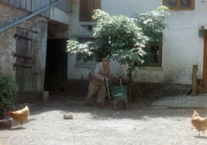

Aus einem Jahr der
Nichtereignisse
From a Year of Non-Events

Ann Carolin Renninger, René FrölkeDE 2017 – Super8 & 16mm on HD – 83 min – German
B+DOP: Ann Carolin Renninger, René Frölke – E: René Frölke – P+D: joon Film
Willi is nearly 90 years old and lives alone on a farm in northern Germany. He likes to talk to his cat, he feeds his chickens and makes his rounds with the aid of a squeaky walker. The garden is overgrown. His house is full of all the things that have accumulated there over the course of a long life, relics of bygone times. Occasionally someone comes to visit, or a moped passes by, but not much happens otherwise. As the seasons change, the film paints a portrait of the everyday life of this resolute, slightly dishevelled old man. (Berlinale)
friday 6 oct 9.30 p.m. werkstattkino
Ann Carolin Renninger * in 1979 in Flensburg. She studied Cultural Studies and has developed and produced various documentaries. Aus einem Jahr der Nichtereignisse is her first film.
René Frölke * in 1978 in East Germany. He has worked as a freelance editor, cinematographer and director for many years. In 2007, he began studying art in Karlsruhe. In 2010, he made his first feature-length documentary, Von der Vermählung des Salamanders mit der grünen Schlange.
Films Führung 2010 (6. UX) – Von der Vermählung des Salamanders mit der grünen Schlange 2010 – Le beau danger 2014